Leah Jackson is a Melbourne artist and ceramicist, making both functional and decorative pieces. Working from her home in Melbourne, the domestic space - and her television - are dominant influences in her work.
Share on Twitter Post on Facebook Contact
ORIGINAL FAKES
I'd only ever seen your crystals before, at a show at Pieces of Eight gallery. They were what initially interested me in your work. What is the story behind them?I did a fine art degree with honours, straight out of high school, having had no life experience! For a while afterwards I continued to actively learn within the arts, but I wasn't making. I eventually quit my job and moved up into a mutual occupancy in the hills above Byron Bay. As you can imagine the mindset up there, there were a lot of crystals around. As a project, I really wanted to practise slip casting and crystals are a really good shape to slip cast, they're so faceted and so many lines to break down.
I was struck by these contrived, crystalline shapes, made from porcelain, questioning the value and quality of counterfeit...I love that you said that - it's spot on. A lot of what I do is also inspired by television, and that Pieces of Eight show was particularly inspired by Gossip Girl! The idea of fakes, of playing a role, and slip casting works like that, it's a skin of the object recreated in what is essentially dirt and water. In Byron Bay, the whole ethos they have there, is so removed from the world. It was 2008 and the world was falling apart and no-one there had any idea; it's an insular little place–
It would be a strange place to be creating. Was your work playful, this way? As an outsider looking in?I remember we were invited to a town party, and we turned up thinking it was going to be all crackers, cheese and wine - we even brought some - and the whole town was there with their families at this bush doof! One of our neighbours, he was 60 or so, told us a story about how he took acid and swam out into the middle of a lake - couldn't say which lake - and had all these revelations in the water. And all I could think of was an old man splashing about in a puddle, off his chops. It really epitomised my experience of Byron Bay - of something not really happening, the idea and the intention being there... and maybe that was enough. These crystals were eventually in a show where they were arranged with reference to that experience, and other tepee moments, the polarity, but also the lovely intentions of it. People really liked them and responded to them - they are quite pretty objects also - and then I started getting orders for them.
Do these experiences relate to your functional pieces?The functional work is separate –
There seem to be similar themes...The decorative pieces are more controlled, the slip cast determines what shape they are to be over time. The functional wares are hand made, they come from the process of the clay itself, and they are never the same shape twice.
They look like a scrunched-up paper bag, with so many tiny creases, a shape that could never be created twice.Yes. These are just such a pleasure for me to make, I can't even explain how enjoyable it is.
It looks very hand-intensiveYes! I could probably get terrible RSI making these but it's such a nice meditative state I get in, a peaceful and relaxing process, which I think enters the work.
This necklace - are these rocks you have cast?Yes, cast from rocks with a black stained slip and gold leaf. Initially the bracelets and this Rock Solid piece were a Craft Victoria project, the premise of the show being 'Artists Who Make Jewellery'. I wanted it to be blingin', but obviously fake - fake rocks with fake gold applied to them!
And gold leaf is unpredictable to work with as wellI do love that unpredictability –
Like the paint on the crystals too –Yes, you can push it in a direction but you can't completely control it, it will take its own form, even if it's in the firing, as the firing will warp the porcelain once it gets to a particular temperature.
CERAMIC PRODUCTION
So there is a point where you need to let go?Yes
You have identified the particular rocks and you have cast them, which is a controlled process, but from then on it's more organic?It's like you said - it's a process of letting go, and there are so many processes in ceramics. For example, I love wood firing. These stoneware pieces - unless you're an absolute whizz, and know what types of wood produce what effects, and know what heat they need to be, the wood firing is quite uncontrollable. The colour on them is ash coming off the burning wood.
So you haven't had any control over the colour?No - it all comes from the wood firing. With ceramics, you do need to be a little bit divorced from the process.
So is there much waste that way? Are there some that just don't look any good?Absolutely. I remember our teachers telling us with wheel throwing - some potters, from the hundreds they have thrown, there may only be a handful they were happy with. And it can come down to that - especially when you are playing around with glazing and firing - all of mine I use are reasonably predictable - but if you develop glazes, then it can years of perfecting. And it is also that it is a breakable medium. It’s pretty strong - some of the oldest objects in the world are ceramic - but I have had pieces break and you have to let it go - it's clay, it's going to break at some stage!
By your hands or someone else's.Yes!
What is the process of slip casting?You have a positive object, and from there make a plaster mould of it. You prepare the object so the plaster doesn't stick to it, which is a process called soft soaping. It's quite an involved process, the ratio of plaster to water needs to be carefully measured and equal on both sides, so that there is equal absorption when the slip gets poured into the plaster. Once the mould is made, you let it dry completely, and then can start pouring in the slip. Slip is really just a mix of water and clay particles - I use prepared slip and add colour, or "stains" to it.
What are you working on at the moment?The next body of work, that I can't wait to get onto, is again inspired by television - looking at objects that tell a story about a character in film or television.
The props?More like set dressing. I've been watching a lot of movies and taking shots and screen grabs of certain objects within a scene that are beautiful or interesting, I want to bring those objects into the foreground. It would be a reinterpretation of the object, as some of them would be made of glass or fabric. I love the way objects can tell a story. I have used this example before, but Flaubert's Sentimental Education - the way he treats the love interest in that novel - is astoundingly beautiful. He dresses her in exquisite fabrics and sits her on velvets, he goes into great detail about the setting that this beautiful woman is within - I love all of the objects that he talks about. I am drawn to the way they contribute to the narrative.
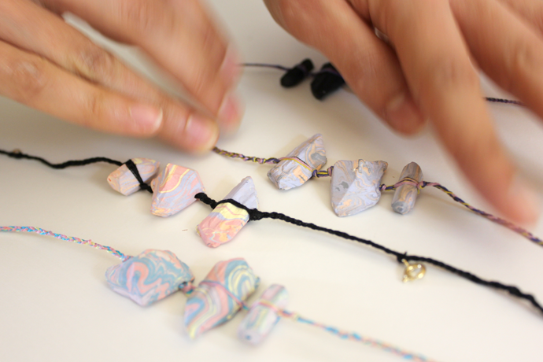
 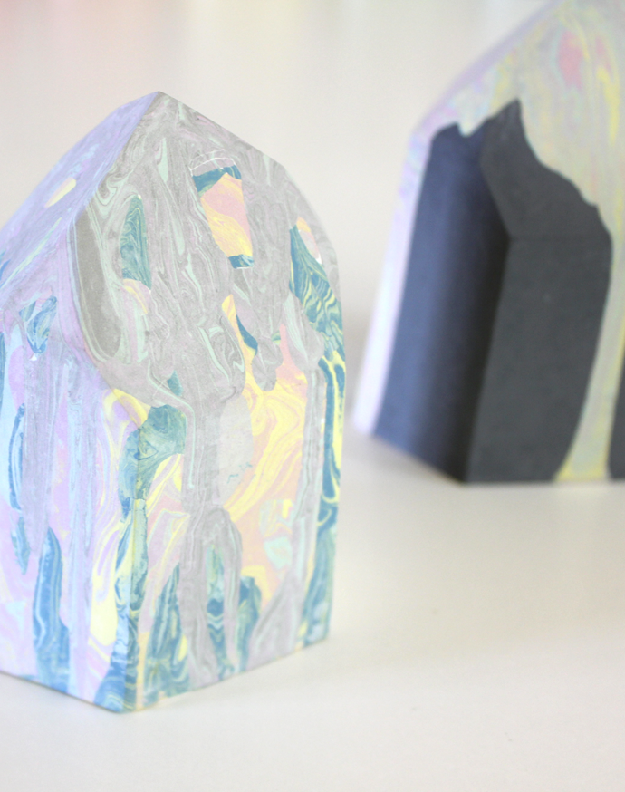
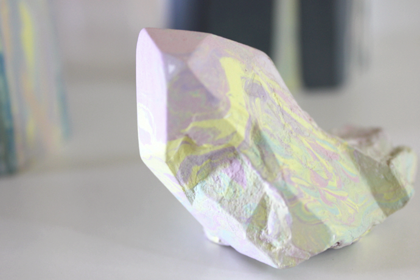
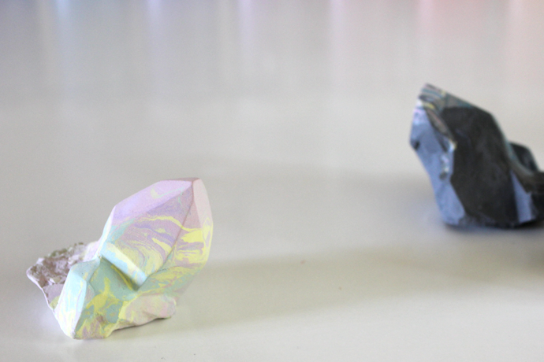
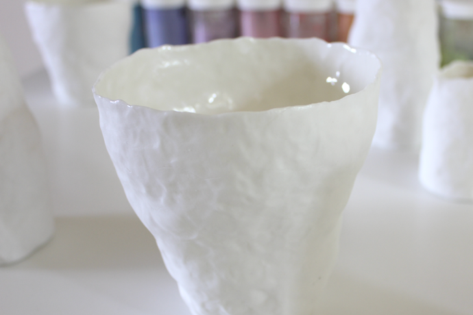
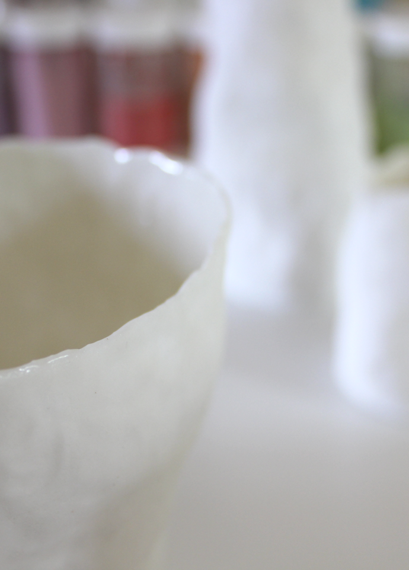
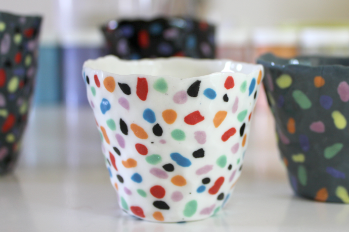
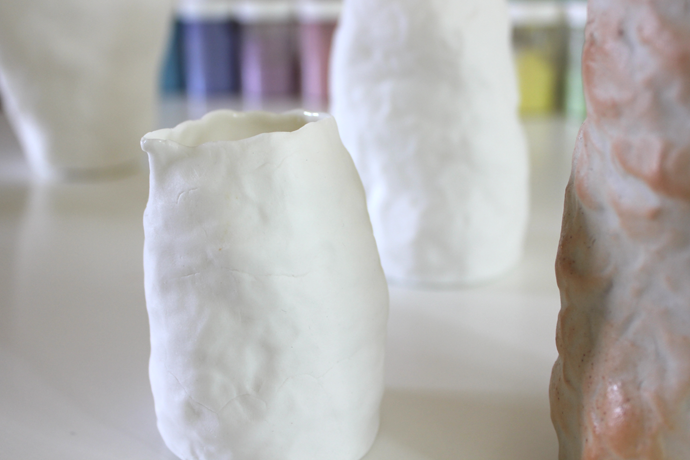
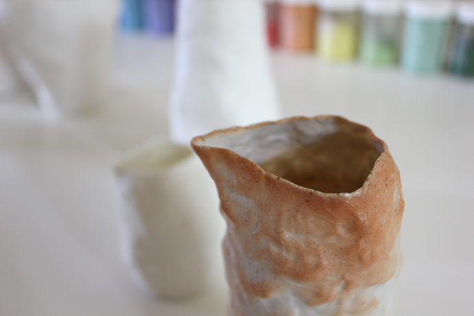
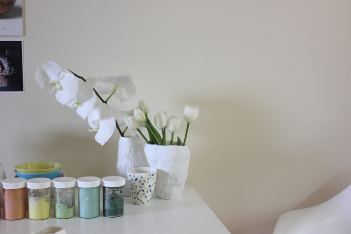
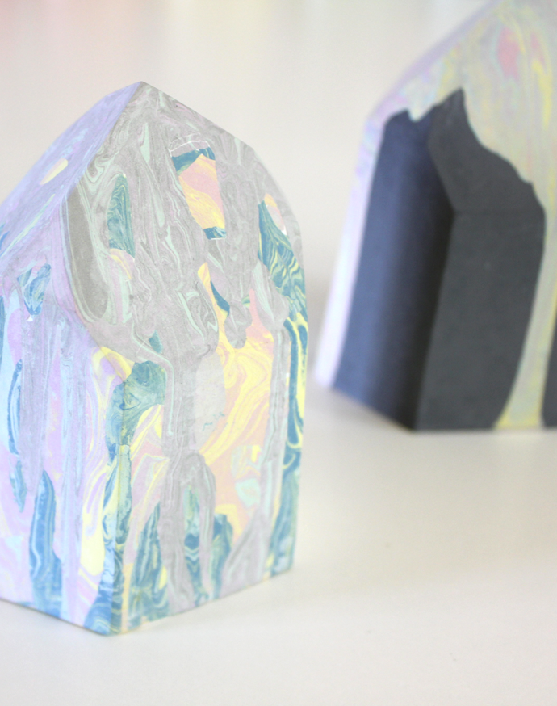
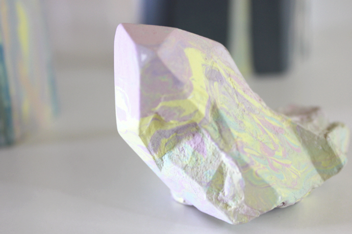
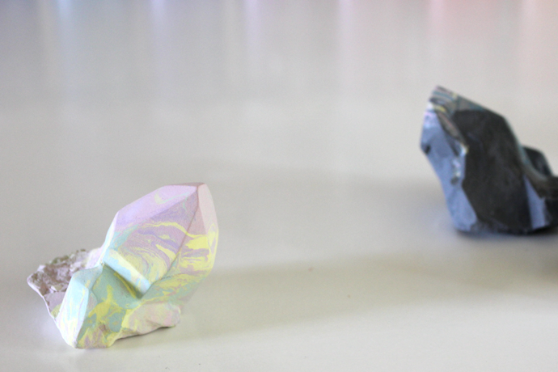
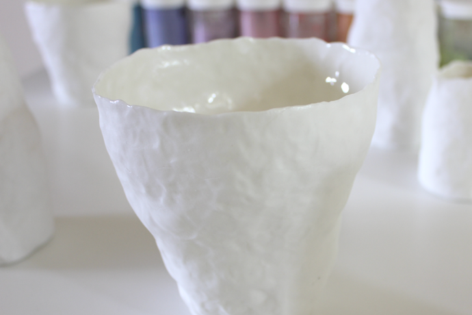
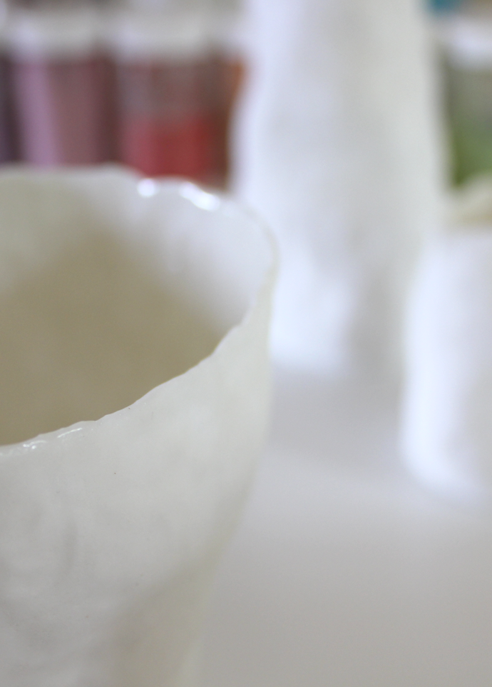
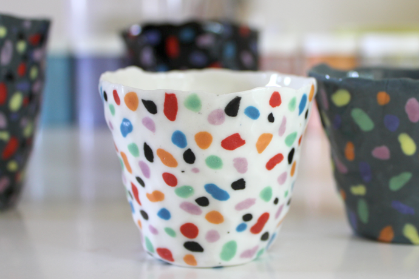
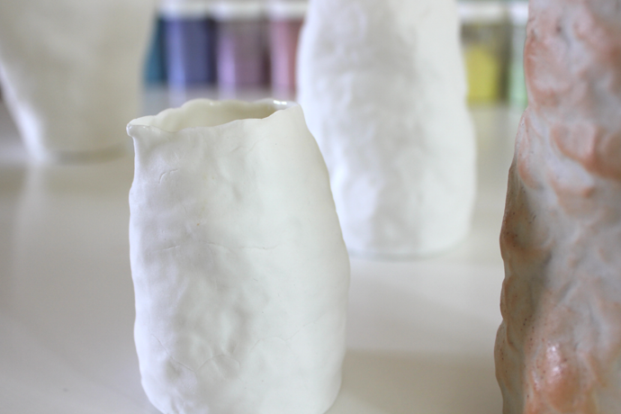
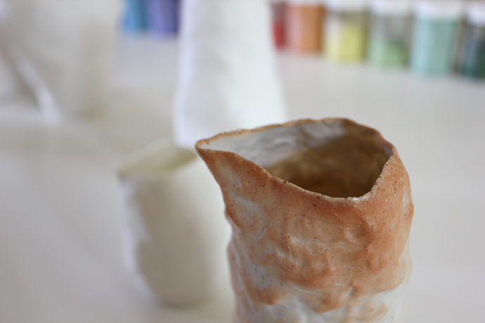
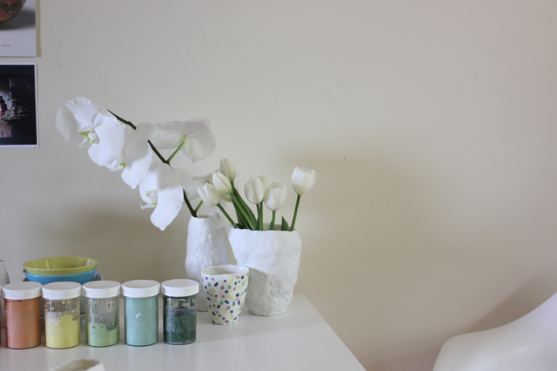
 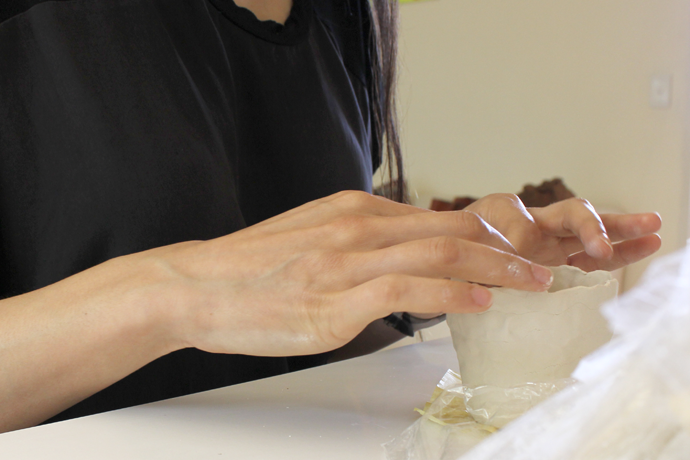
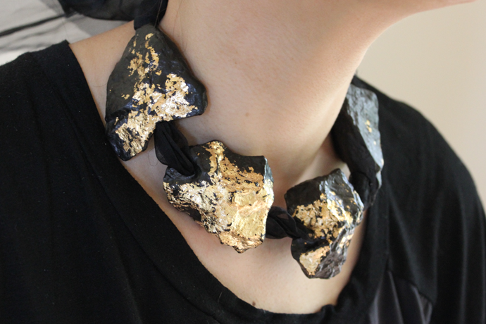
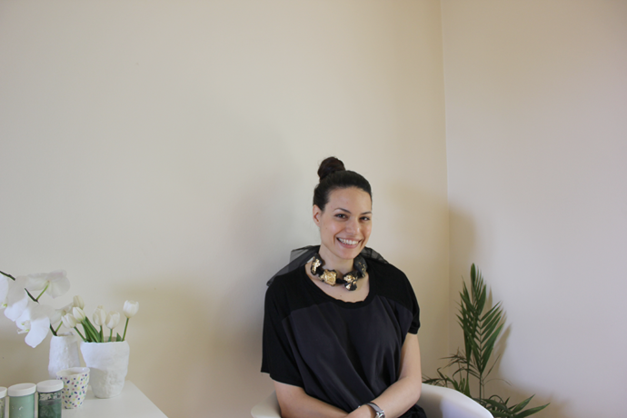
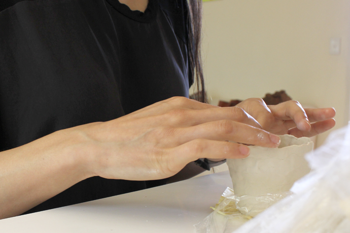
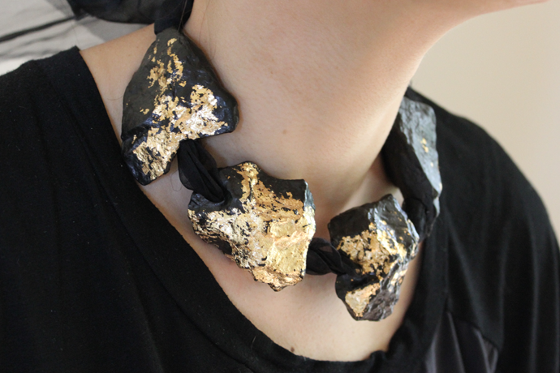
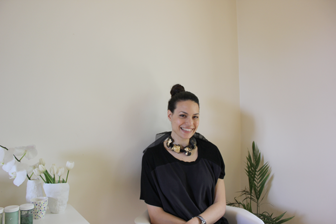